無課金・微課金の最初の1体
レン＆ロン
ジェムはルーレットへ。まず星4・第1遠征Lv5を目安に、競技場や巨熊参加に使う。
無課金から重課金までの育成順と、巨熊・攻撃集結・駐屯での使い分け。
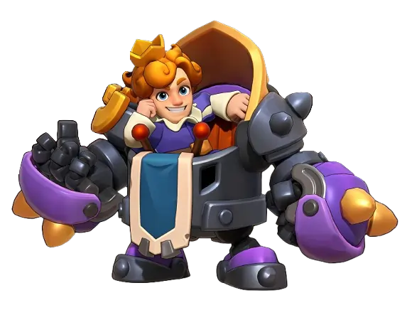
チャールズ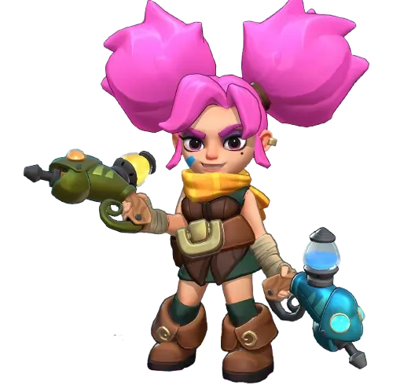
アイヴァ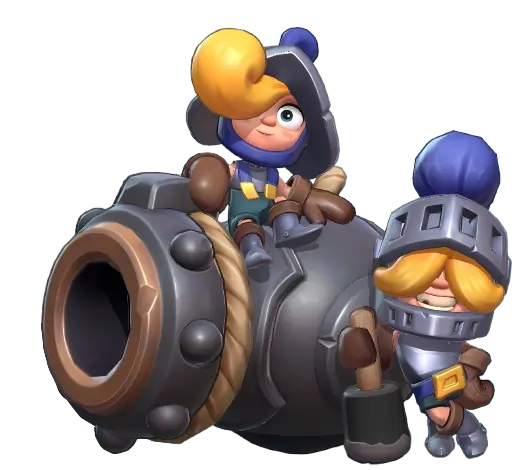
レン＆ロンジェムはルーレットへ。まず星4・第1遠征Lv5を目安に、競技場や巨熊参加に使う。
巨熊や攻撃集結をよく開くなら、汎用欠片と専用素材を優先。巨熊では育成済みヤンと組ませる。
王城や施設を守る担当なら優先。トリトンを育成済みなら、実際の駐屯編成で比較してから替える。
巨熊の発起はアマデウス＋アイヴァ＋ヤンが本命。 参加中心ならレン＆ロンの先頭スキルを候補にし、同盟の指定に合わせる。 近い英雄とのダメージ比較を見る
ジェム・汎用欠片・専用装備素材は、それぞれ別に配分する。 レン＆ロンにジェムを回しつつ、アイヴァに汎用欠片と専用素材を集中できる。発起や駐屯を普段から任されているなら、担当する役割の英雄を先に仕上げる。
| 課金帯 | 最初に育てる | 次の投資 | 後回しにする条件 |
|---|---|---|---|
| 無課金 | レン＆ロンをルーレットで星4、第1遠征Lv5 | 自分で巨熊を開き、欠片と専用素材を確保できるならアイヴァ星4＋専用＋2を起点にする | 駐屯を任されないならチャールズ。レン＆ロンの専用装備は巨熊参加だけなら後回し |
| 微課金 | 参加中心ならレン＆ロン。攻撃・巨熊を頻繁に開くなら汎用欠片と専用素材はアイヴァに集中 | アイヴァを星4＋専用＋2で使い、発起で成果が出るなら＋4〜6へ。レン＆ロンはルーレットで並行 | 育成済みヤン・トリトンがいるなら、低育成の新英雄への即交代は保留。駐屯担当ならチャールズを先にする |
| 重課金・攻撃／巨熊の発起 | アイヴァ星5・専用＋10を優先 | 汎用の攻撃集結ならレン＆ロン。巨熊専用なら育成済みヤンを維持し、チャールズは駐屯需要で進める | 巨熊だけを理由にレン＆ロンの防衛専用スキルを上げる投資 |
| 重課金・駐屯担当 | チャールズ星5・専用＋10を優先 | 弓兵入り駐屯ならレン＆ロン。攻撃の発起も担うならアイヴァを次に仕上げる | 歩兵・騎兵のみの駐屯なら、レン＆ロンへの投資は実際に採用する編成で判断 |
無課金向けのレン＆ロン優先は、英雄ルーレットという入手経路と、巨熊の第1遠征・競技場・攻撃参加に使える点を重視した結論。巨熊の参加枠を既存のLv5英雄で埋められ、競技場にも使わないなら、レン＆ロンの星4を急ぐ優先度も下がる。参加中心なら星4でいったん区切り、星5はジェムと次世代の必要分を見て決める。第8世代のルーレット歩兵ディエゴを取りたい人は、レン＆ロンの星5と次のルーレットに使うジェムを比較する。 公式レン＆ロン · Kingshot Handbookの育成方針 · 第8世代の入手先と役割 · 巨熊参加枠と手持ちの考察
第7世代の3英雄は、招募用の専用欠片10個と、招募後に星4まで465個が目安。星4から星5へは追加600個、未招募から星5までは合計1,075個。星4で遠征スキルLv5まで育てられるため、巨熊参加の先頭役なら星5と専用装備の優先度は低い。星5の追加投資は、発起で自分の英雄ステータスを使う場合や競技場の主力にする場合に検討する。 公式の星別欠片表 · 招募に必要な欠片 · 巨熊参加とスキルLv5
専用装備の遠征スキルは＋2から。攻略サイトの必要数表では、未強化から＋2は15個、＋4は50個、＋6は105個、＋8は180個、＋10は275個。まず＋2で用途を試し、頻繁に使う英雄を伸ばす。アイヴァは発起時の殺傷力、チャールズは防衛時のHP、レン＆ロンは防衛時の攻撃力を伸ばす。アルテマの専用装備記事はチャールズを推すが、攻撃発起にもHP効果があるとする記述は公式の「防衛部隊」という条件と食い違う。 専用素材の必要数 · チャールズの公式効果 · アルテマの専用装備記事
駐屯のチャールズとトリトン。 Strat Game Slothの初期検証要約では、歩兵60・騎兵40にスルードとサロを組ませるとチャールズが有利、レン＆ロンを含む構成ではトリトンが好相性だったという。比較の生ログや試行数は公開されていない。育成済みトリトンがいる場合は、同じ相手・兵比・参加スキルでチャールズと比較する。 検証者の要約 · 公式Wikiの王城編成例
王国#898を想定し、第7世代までで比較。公開履歴では#898は2026年11月9日に第7世代が解禁された。 王国#898の履歴
集結を開くなら、アマデウス＋アイヴァ＋ヤン。 第7世代の新英雄で巨熊の発起を伸ばすなら、最初にアイヴァを検討する。集結に乗るなら、同盟指定の先頭英雄を優先し、第7世代ではレン＆ロンが使いやすい。
| 枠 | 本命 | 比較相手 | 入れ替え時の推定差 |
|---|---|---|---|
| 騎兵 | アイヴァ | リトルペトラ（ペーラ） | アイヴァが約21%上 |
| 弓兵 | ヤン | レン＆ロン | ヤンが約10%上 |
| 歩兵 | アマデウス | ヘルガ | アマデウスが約13%上 |
表はHededalの例示アカウントで各候補を星5・専用装備＋10にそろえ、各兵種の空枠を基準にした倍率から入れ替え差を算出したもの。たとえば騎兵は2.25÷1.86−1で約21%。各行の差は足し合わせない。モデルの想定は弓兵T11・TG8で、王国#898や個人の戦闘ログから測った値ではない。 比較モデルと条件
アイヴァは敵の防御力低下・被ダメージ増加・味方の総殺傷力上昇を持ち、専用装備も集結発起で殺傷力を伸ばす。同モデルの別比較では、アマデウスとヤンを固定すると、アイヴァの専用＋2／＋4／＋6／＋10がペトラの＋10に対して約＋13／16／18／20%。星やスキルの育成差まで含めた交換ラインは個別に確認する。
ヤンの専用スキルは発起時の殺傷力、レン＆ロンの専用スキルは防衛時の攻撃力。両者を十分育てるならヤンを維持する根拠が強い。ルーレットでレン＆ロンの星・スキルが先に伸びた場合は、同条件で一枠ずつ比較する。
両者とも攻撃用の専用スキルを持つ。育成済みアマデウスが第一候補で、ヘルガは有力な代役。どちらも育っていなければ、手持ちのアルカとゾーイを比べる。チャールズは遠征効果が防御寄りのため、巨熊を理由に交代する優先度は低い。
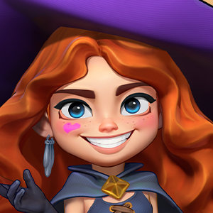
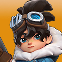
Redditには星3・専用なしアイヴァが星4.2・専用＋5のペトラと同程度だったという報告もある。公開投稿からは試行数や参加条件をそろえたか確認できないため、育成の基準値には使えない。 専用装備別の推定 · プレイヤーの比較報告 · ヤンの公式データ
集結を開く側は3英雄の遠征スキルが働く。参加側は自分の編成の先頭に置いた英雄の第1遠征スキルが候補で、集結全体でレベル上位4枠が採用される。レン＆ロンの「砲兵隊」は最大で総攻撃力＋15%・総殺傷力＋10%。チェンコなどの既存英雄と混ぜ、同盟が指定する枠に合わせる。 公式Wikiの巨熊ルール · 運営の戦闘FAQ · レン＆ロンの公式データ
アイヴァを乗せる場合。 先頭スキルは敵総防御力−25%。Hededalの一例ではアイヴァ／ビビアンが各＋25%、レン＆ロンが＋21%、チェンコ・あまねなどが各＋20%の推定。一方、Kingshot Intelはアイヴァの防御低下を巨熊ダメージの根拠として採用していない。発起側がアイヴァを使う場合や複数のアイヴァで参加した場合に、防御低下が重複するかは公開の比較で確認できなかった。 参加枠の推定例 · 別モデルの扱い · 参加スキルの重複に関する確認状況
兵比は歩10・騎10・弓80を比較の出発点にできる。弓兵を十分に積めるなら、弓90%以上も同じ兵数で試す。Hededalの高育成例では歩1・騎2・弓97だが、兵種の育成と同盟全体の兵数で変わる。 兵比の出発点 · 高育成の計算例
発起は騎兵か弓兵を1枠だけ交換し、兵数・兵比・バフ・参加者・採用された参加スキルをそろえる。参加を比較する場合は同じ発起者と発起英雄で、採用4枠のうち1枠だけを替える。1回の最高値より、各編成の複数回の中央値と範囲を見る。Hededalは同編成でも確率スキルで例として±15%程度のブレを見込む。 ダメージ変動の説明
討伐は英雄が直接戦うモード、遠征は部隊戦。下表は公式Wiki日英版の最大値を基準に整理した。第6世代の最大遠征攻防補正は各＋540.43%、第7世代は各＋650.52%で、差は110.09ポイント。実際の交代は星・装備・スキルの差も含めて判断する。 世代比較表。3体とも専用装備の遠征ステータスは殺傷力・HP各＋160.50%で、装備スキルは発動条件が異なる。
表は横にスクロールできます。
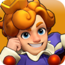
王城や施設を守る担当なら優先。トリトンを育成済みなら、実際の駐屯編成で比較してから替える。 主な入手先 最強領主・至高領主・英雄殿堂・毎日特典。
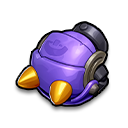
正義の鉄拳| 区分 | スキル | 最大効果 |
|---|---|---|
| 討伐 | リベンジャー | 前方扇形に攻撃力×140%、眩暈1秒、自身の攻撃力＋100%が2秒 |
| 討伐 | フェアウェル | 周囲に攻撃力×280%のダメージ |
| 討伐 | ケアフリー | 50%の確率で被ダメージを半減 |
| 遠征1 | 教化 | 敵全体の総殺傷力−20% |
| 遠征2 | 鋼鉄の身体 | 味方全部隊の被ダメージ−20% |
| 遠征3 | 愛と正義 | 味方全部隊の総HP＋25% |
| 専用・討伐 | 修理の達人 | HP50%未満で最大HPの35%回復、戦闘終了まで防御力＋30%。1戦1回 |
| 専用・遠征 | 華麗なる登場 | 防衛部隊のHP＋15% |
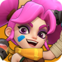
巨熊や攻撃集結をよく開くなら、汎用欠片と専用素材を優先。巨熊では育成済みヤンと組ませる。 主な入手先 英雄殿堂。
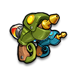
七色カメレオン| 区分 | スキル | 最大効果 |
|---|---|---|
| 討伐 | ボマーペイント | 0.5秒ごとに範囲へ攻撃力×70%。3秒 |
| 討伐 | スポイルペイント | 0.5秒ごとに攻撃力×35%、対象の被ダメージ＋25%。2秒 |
| 討伐 | フェイクペイント | 自身の防御力＋75% |
| 遠征1 | アナライズ | 敵全部隊の総防御力−25% |
| 遠征2 | ライト＆シャドウ | 4ターンごとに敵全体の被ダメージ＋50%。2ターン |
| 遠征3 | クール＆ホット | 味方全体の総殺傷力＋25% |
| 専用・討伐 | カラーセンス | 自身の与ダメージ＋25%、塗料の影響を受けた対象の攻撃力−25% |
| 専用・遠征 | クロマストーム | 集結発起時に味方全部隊の殺傷力＋15% |
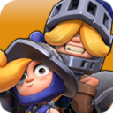
ジェムはルーレットへ。まず星4・第1遠征Lv5を目安に、競技場や巨熊参加に使う。 主な入手先 英雄ルーレット。
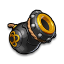
ヘヴィキャノン| 区分 | スキル | 最大効果 |
|---|---|---|
| 討伐 | スカイハイショット | 範囲に攻撃力×420% |
| 討伐 | 特製ナパーム弾 | 範囲に攻撃力×84%。燃焼は0.5秒ごとに攻撃力×25%で2秒 |
| 討伐 | キャノンボウラー | 自身の攻撃力＋26% |
| 遠征1 | 砲兵隊 | 味方全部隊の総攻撃力＋15%、総殺傷力＋10% |
| 遠征2 | 連続砲撃 | 敵弓兵への与ダメージ＋30%、敵歩兵への与ダメージ＋25% |
| 遠征3 | ヘビィキャノン出撃 | 味方全部隊の攻撃時、50%の確率で50%の追加ダメージ |
| 専用・討伐 | クールな砲撃手 | スカイハイショット後、味方英雄・護衛の攻撃速度＋14%が5秒 |
| 専用・遠征 | 秘密の火薬樽 | 防衛部隊の攻撃力＋15% |
サイトによる表記差。 アイヴァの「クール＆ホット」は公式Wikiで総殺傷力最大＋25%。アルテマの一覧は＋5%と掲載している。チャールズの「愛と正義」は遠征の味方総HP上昇で、自己回復は討伐用の「修理の達人」。 公式アイヴァ · アルテマ
自分で開くならアマデウス＋アイヴァ＋ヤンが最大育成時の本命。乗る場合はレン＆ロンが使いやすい。比較表と参加枠の選び方
公式Wikiの発起例はアマデウス・トリトン・チャールズのいずれか＋アイヴァ＋レン＆ロン。参加時は先頭英雄の第1遠征スキルが候補。レン＆ロンは攻撃・殺傷、アイヴァは敵防御低下を担当する。
公式Wikiの例はチャールズ＋イェーガー＋ソフィア。レン＆ロンの専用装備は防衛攻撃を上げるので、弓兵を入れる駐屯の選択肢。公式ガイドの兵比例は歩60・騎40・弓0。相手と育成状況で調整する。
攻撃集結の兵比例は歩50・騎20・弓30。相手の歩兵が厚い場合は、歩50・騎0・弓50も公式ガイドに挙がる。巨熊の参加スキルは同盟で指定されることがあり、採用は上位4枠が目安。
競技場で前衛が早く落ちるならチャールズ、後衛火力が足りないならレン＆ロンを試す。アイヴァは被ダメージ増加で味方の火力を支えられる。対戦リプレイでどの枠が負けにつながっているかを見てから替える。
先行王国#1〜25では2026年5月25日に登場したと報告されている。攻略サイトの目安は王国開設から約430〜440日で、王国#7の記録は448日。開催日は所属王国のイベント画面で確認する。 先行実装の報告 · 王国#7の履歴
| 回数 | 確定累計欠片 | 10連割引適用時 |
|---|---|---|
| 70回 | 65個 | 94,500ジェム相当 |
| 120回 | 115個 | 162,000ジェム相当 |
確定累計は到達報酬の合計。ルーレット自体の当選は別途加わり、無料・持ち越しチップがあれば必要なジェムは下がる。70回から120回まで追加で回す場合は、10連割引のみで67,500ジェム相当、確定欠片が50個増える。 英雄ルーレットの仕様
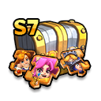
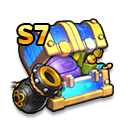
英雄殿堂には3体から選べる欠片箱が掲載されている。英雄殿堂の通貨は1枚150ジェムで、無料1枚を含めジェム枠は100枚、99枚買うと14,850ジェム。これは通貨の購入上限分で、英雄や欠片の購入総額は交換レートと在庫で変わる。専用装備素材箱は英雄殿堂のほか神秘ショップなどに掲載されている。 英雄殿堂の通貨 選択欠片箱 · 専用装備素材箱